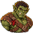
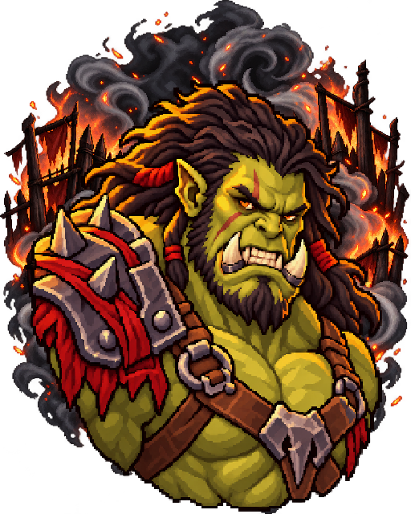
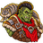
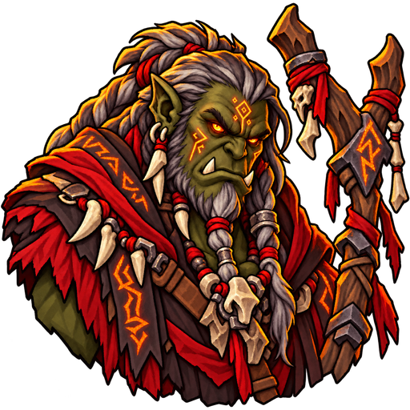
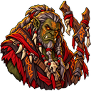
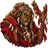
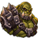
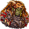

Grunts
Warm mid-olive skin and plain stitched leathers



Map token and small iconThe skin-tone range is dialed back so the host feels like one clan. The Warboss's tusk bands are also realigned. This gallery compares the latest portraits with the prior pass at map-token size. Concepts are staged for review and have not replaced the game art. Open the one-page lineup.

The existing rival portrait, shown here to compare the host's faces and skin tones.
Warm mid-olive skin and plain stitched leathers

Map token and small iconSlightly cool olive skin, mohawk and prowling wolf



Map token and small iconDark olive skin and glowing runes preserved




Map token and small iconEarthy olive skin and black eye paint preserved



Map token and small iconMid olive skin, manticore pelt and aligned tusk bands



Map token and small icon